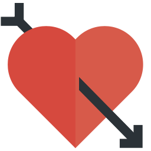
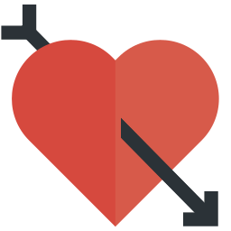

Hi Sayangku
Nadya Novika
I really like your name bby, beautiful
Happy New Year 2023 Sayang 🤠
Sayang, sebelumnya aku mau minta maaf. maaf aku ndk bisa nemenin ayang di malam tahun baru ini, aku pengen banget nemenin ayang, aku ndk tega ngelihat ayang kebingungan tahun baruan sama siapa, tapi aku juga bingung by mau kesitu gimana, gak kesitu juga gimana jujur by aku sedih banget, ayang bilang pengen tahun baruan, andaikata gua banyak duid, mungkin udah d sana skrng. sayang selama setahun ini telah banyak hal kita lalui, sedih, senang, marah, bosan semuanya udah d cicipi dan aku ndk nyangka ayang masih tetap setia disampingku. Sebenarnya aku malu sayang, gua merasa gua ndk berdaya, kamu telah banyak tetapi meskipun aku begini, aku sangat2 sayang, aku ndk mau kehilangan ayang. di tahun ini tentunya banyak pencapaian yang telah ayang raih, tidak sedikit juga rasa sakit, kecewa yang dihadapi tetapi aku bangga, bangga sekaligus senang bisa melihat ayang melewatinya, aku bangga bisa menemani ayang sampai d titik ini, sayangg, semoga d tahun 2023 ini menjadi tahun yang baik,d berikan kekuatan untuk bisa menghadapi dan melewati segudang halangan dan cobaan. tahun ini semoga keberuntungan buat kita, segera d terima kerja, dan bisa mweujudkan segala resolusi dan harapan....... AAMIIN
Send
My Dear
I realize, I should be beside you to celebrate the New Year Eve. but I hope at least this reduce ur sadness
I wanted to do something
special
.
Because,
You are Special :)
S O
 

Happy NewYear
I Love U Sayang


Maaf bby, aku hanya bikin ucapan ini.
sampai ketemu di PWT bby
:)